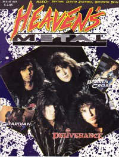

Deliverance
|  |
| December 1990 Heaven's Metal |
Media coverage:
- 1987 in Heaven's Metal "Deliverance", by Doug Van Pelt
- 1987 in Heaven's Metal "Quotable Quotes"
- 1987 in Heaven's Metal "Metal Mardi Gras", by Doug Van Pelt
- 1987 in Heaven's Metal "Deliverance", by Doug Van Pelt
- Apr 1988 in Heaven's Metal "Delivering Us From Wimpy Music", by Doug Van Pelt
- Feb 1990 in Heaven's Metal "The Temporarily Insane Deliverance Interview", by Doug Van Pelt
- Sep 1990 in CCM "In Concert: Austin Opera House, Austin, TX", by Doug Van Pelt
- Sep 1990 in Heaven's Metal "Poster: George Ochoa of Deliverance"
- Dec 1990 in Heaven's Metal "Daring To Deliver", by Steve Schmutzer
- Sep 1991 in Heaven's Metal "Concert Review: Los Angeles", by Sharon David Shubin
- Nov 1991 in Heaven's Metal "Speed Metal With A Twist", by Doug Van Pelt
- Jan 1992 in Syndicate "Metal Shop: Not Kidding Around", by Randy S Rocker
- Sep 1992 in Heaven's Metal "Staying With Deliverance", by David A. Jenison
- Sep 1992 in Heaven's Metal "Poster: Deliverance"
- Mar 1993 in Heaven's Metal "Getting Serious With Deliverance"
- Sep 1993 in Heaven's Metal "Still Learning and Teaching", by Jerry Wilson
- Jan 1994 in Heaven's Metal "Concert Review: Saviour Machine, Deliverance", by Camille Breise, Andrew Crump
- Nov 1994 in Heaven's Metal "Riding The River Disturbance", by Dan MacIntosh
- Jul 1995 in Heaven's Metal "A Decade of Deliverance", by Brian Vincent McGovern
- Apr 1996 in HM "Deliverance", by Ginny McCabe
- Jan 2001 in HM "Fearful (A)Symmetry", by Doug Van Pelt
- Jul 2001 in HM "Interview: Allan And Jimmy", by Allan Aguirre
- Dec 2006 in Heaven's Metal "Jimmy Brown", by John Tinker
- Aug 2007 in Heaven's Metal "We Wanted Deliverance Live and / or In The Studio", by Jeff McCormack
- Jan 2009 in HM "Classic Moments: Deliverance Weapons of Our Warfare, Mortal Fathom", by Doug Van Pelt
- Dec 2013 in HM "Heaven's Metal: Your Deliverance Is Near", by Chris Gatto
- Aug 2019 in Metalbreed "Latido Extremo: Deliverance"
Albums & reviews:
1989: Deliverance
- Jul 1989 in Heaven's Metal, by Doug Van Pelt
- Sum 1989 in Harvest Rock Syndicate, by Kevin Allison
- Aug 1989 in CCM, by Doug Van Pelt
- Oct 1989 in Heaven's Metal, by Michael Bloodgood
- Nov 1989 in Campus Life, by Jim Long
- May 2019 in Metalbreed, by Johnny Gonzäles
- Sep 1990 in Heaven's Metal, by Joey Knight
- Oct 1990 in CCM, by Doug Van Pelt
- Fall 1990 in Harvest Rock Syndicate, by Kevin Allison
- 1990 in Cornerstone, by Jon Trott
- Nov 1990 in Campus Life
- Jan 2009 in HM, by Doug Van Pelt
- Sep 1991 in Harvest Rock Syndicate, by Kevin Allison
- Nov 1991 in Heaven's Metal, by Rebecca Bullock
- Dec 1991 in CCM, by Doug Van Pelt
- Spr 1992 in YouthWorker, by Steve Rabey
- Jul 1992 in Syndicate, by Kevin Allison
- Sep 1992 in Heaven's Metal, by Doug Van Pelt
- Mar 1993 in Heaven's Metal, by Doug Van Pelt
- Mar 1993 in Syndicate, by Kevin Allison
- Apr 1993 in The Lighthouse, by Brad Mattern
- Nov 1993 in Heaven's Metal, by Doug Van Pelt
- Jan 1995 in Heaven's Metal, by Doug Van Pelt
- Sep 1995 in HM, by Doug Van Pelt
- Apr 1996 in HM, by Doug Van Pelt
- Spr 1996 in The Ultimatum Metal Mag, by Scott Waters
- 1997 in Eccentric Zine
- Sep 2001 in HM, by Doug Van Pelt
- Mar 2001 in HM, by Doug Van Pelt
- Jul 2007 in HM, by Chad Olson
- Aug 2007 in Heaven's Metal, by Jonathan Swank
- Oct 2007 in Heaven's Metal, by Steve Rowe, Chris Beck
- Dec 2008 in Heaven's Metal, by Chris Gatto
- Dec 2008 in Heaven's Metal, by Chris Gatto
- Jul 2008 in HM, by Jonathan Swank
- Aug 2008 in Heaven's Metal, by Jonathan Swank
- Sep 2011 in Down The Line, by Matt Crosslin
- Mar 2014 in Down The Line, by Matt Crosslin
- Jan 2018 in Down The Line, by Doug Peterson
- May 2018 in Metalbreed, by Anthony Martínez
Award Summary (Nominations / Wins)
Dove Awards- 1991 Dove Awards
- Short Form Music Video: "To Be Loved"
- Metal Album: Learn
Books about Deliverance
- "0796 Deliverance (US)" in Headbangers: The Worldwide Mega-Book of Heavy Metal (Mark Hale, 1993)
- "Deliverance" in The Encyclopedia of Contemporary Christian Music (Mark Allan Powell, 2002)

© 2011 CMnexus. Last updated September 2019. Contact: editor -AT- cmnexus -DØT- org About